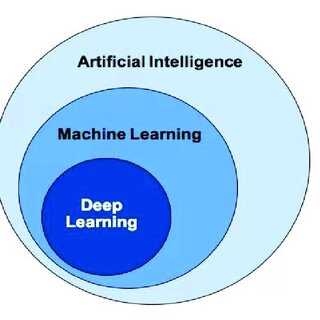
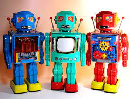

IBM defines Artificial Intelligence as: " The science and engineering of making intelligent machines, especially intelligent computer programs. It is related to the similar task of using computers to understand human intelligence, but AI does not have to confine itself to methods that are biologically observable” (McCarthy, 2004).
Link
Think of Artificial Intelligence as a computer learning human processes using large amounts of data. Subfields of AI include machine learning and deep learning which create systems in order to make predictions and classification algorithms.
Deep Learning vs. Machine Learning
Both are subfields of Artificial Intelligence
Deep Learning
Comprised of neural networks of more than three layers
Automates much of the feature extraction process
Can handle labeled datasets but does not require them
Can handle unstructured data (text, images)
Determines the hierarchy of features
Does not require human intervention
Contains Generative AI (models that can take raw data) and learn to generate statistically probably outputs
Link
Machine Learning
More dependent on human intervention to learn
Humans determine hierarchy of features to understand the differences between data inputs, usually requiring more structured data
Link

What AI Can be Used For
Speech recognition:
Known as automatic speech recognition (ASE)
Allows computers to recognize speech (think of hey siri)
Allows speech to text (think of google translate)
Allows human speech to written format
Customer Service
Virtual agents (chipotle uses pepper)
FAQ's- collecting data on what people ask agents, providing this to customers beforehand
Computer Visison
Derive information from images, videos, or other visual inputs
Photo tagging in social media
Radiology imaging in healthcare
Self-driving cars: object detecting
Facial Recognition
Reccomendation Engines
Using consumer behavior data to discover trends
Add-on recommendations for online retailers
Automated Stock Trading
Optimize stock portfolios
Trades without human intervention

Robotics
Carrying goods in hospitals, factories, and warehouses